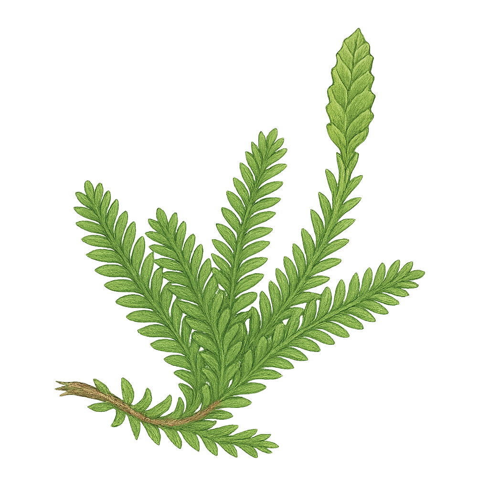

Selaginellaceae
Spike-moss Family / Lesser Clubmoss Family
Selaginellaceae is the single family within the order Selaginellales, part of the ancient Lycophyte lineage (Phylum Lycopodiophyta). It comprises essentially one large genus, Selaginella, with around 750 species worldwide. These are typically small, herbaceous, evergreen perennials resembling mosses or clubmosses, found in diverse habitats from moist forest floors and rocks to arid deserts. Key characteristics include scale-like leaves (microphylls) often arranged in four rows, the presence of a small appendage called a ligule at the leaf base, root-bearing rhizophores, reproduction via spores produced in terminal cones (strobili), and heterospory (producing two distinct sizes of spores).
Overview
Spike-mosses (Selaginella) represent a distinct lineage of vascular plants (lycophytes) separate from ferns and seed plants. Their history stretches back over 400 million years, with ancient relatives forming large trees in Carboniferous swamps. Modern species are mostly small, creeping or ascending herbs. While most prefer moist environments, some species exhibit remarkable desiccation tolerance, like the 'Resurrection Plant' (S. lepidophylla), which can curl into a dry ball and revive upon rehydration.
Ecologically, they can form ground cover or grow on rocks and trees. Some species contain unique chloroplast structures, potentially adaptations to low light. Horticulturally, several species are grown as ornamentals or houseplants, valued for their delicate, fern-like foliage (e.g., Peacock Moss, Frosty Fern). Selaginella moellendorffii serves as an important model organism for evolutionary and developmental studies due to its phylogenetic position.
Quick Facts
- Scientific Name: Selaginellaceae Willk.
- Common Name: Spike-moss family
- Number of Genera: 1 (Selaginella)
- Number of Species: Approximately 750
- Distribution: Cosmopolitan, primarily tropical but extending into arctic and arid regions.
- Evolutionary Group: Vascular Plants - Lycophytes (Phylum Lycopodiophyta)
- Order: Selaginellales
Key Characteristics (Lycophyte Features)
Sporophyte (Dominant Plant)
- Habit: Primarily perennial herbs (rarely annual), often delicate, forming mats or tufts; creeping, ascending, or erect stems.
- Stems: Branching usually dichotomous or pseudo-monopodial, often flattened in one plane. Vascular structure (stele) is typically a protostele, sometimes suspended within the cortex by trabeculae (modified endodermal cells).
- Rhizophores: Characteristic, often colorless, leafless, root-bearing branches that typically arise from stem branching points (angles) and grow downwards, producing adventitious roots upon reaching the substrate.
- Leaves (Microphylls): Small, scale-like, simple, with a single, unbranched vein (midrib). Possess a small, flap-like appendage called a ligule on the adaxial (upper) surface near the base (a key diagnostic feature distinguishing them from Lycopodiaceae). Leaf arrangement varies:
- Anisophyllous (Most Species): Leaves are dimorphic, arranged in 4 rows along the stem – two rows of smaller dorsal leaves and two rows of larger ventral/lateral leaves.
- Isophyllous (Some Species): All leaves similar in size and shape, often arranged spirally.
- Roots: True adventitious roots, typically arising from the tips of rhizophores.
Reproductive Structures (Sporophyte)
- Strobili (Cones): Spore-bearing leaves (sporophylls) are typically aggregated into compact, terminal cones (strobili). Sporophylls may resemble vegetative leaves or be distinctly modified, usually arranged in 4 ranks.
- Heterospory: A defining feature. Produce two types of spores within the same strobilus (or sometimes different strobili):
- Megasporangia: Located in the axils of megasporophylls (often basal in strobilus), producing typically 1 or 4 large megaspores.
- Microsporangia: Located in the axils of microsporophylls (often distal in strobilus), producing numerous tiny microspores.
- Spores: Trilete (tetrahedral spores with a three-pronged scar).
Gametophyte Generation (Reduced Stage)
Gametophytes develop largely or entirely within the spore wall (endosporic development), making them inconspicuous.
- Megagametophyte: Develops within the megaspore wall, eventually rupturing it to expose archegonia (female sex organs). Relatively large, containing stored food reserves.
- Microgametophyte: Develops entirely within the microspore wall, consisting of little more than an antheridium (male sex organ) that releases numerous biflagellate sperm.
- Fertilization: Requires water for sperm to swim to the egg within the archegonium on the megagametophyte. The resulting diploid zygote develops into the embryo and new sporophyte.
Field Identification
Identifying Selaginella involves recognizing its lycophyte features and distinguishing it from true mosses and related clubmosses.
Primary Identification Features
- Lycophyte Habit: Small, herbaceous vascular plant, often moss-like but with true stems, roots (often via rhizophores), and scale-like microphylls.
- Microphylls with Ligules: Tiny scale-like leaves with single vein; presence of a small ligule at the adaxial base is key (requires good hand lens or scope).
- Anisophylly (Often): Leaves typically in 4 ranks with distinct sizes (smaller dorsal, larger lateral/ventral) giving branches a flattened appearance.
- Terminal Strobili: Compact cone-like structures bearing sporangia at branch tips.
- Heterospory: Presence of both large megaspores and tiny microspores within sporangia (often difficult to see without dissecting strobilus).
- Rhizophores: Leafless, often pale branches growing down from stem angles (when present).
Secondary Identification Features
- Branching Pattern: Dichotomous or pseudo-monopodial.
- Overall Texture: Delicate, moss-like, or sometimes firm.
- Leaf Shape/Tip: Pointed vs. rounded, presence of bristles.
- Resurrection Habit: Ability to curl up when dry (S. lepidophylla).
- Habitat: Moist soil, rocks, epiphytic, or arid environments.
Seasonal Identification Tips
- Year-round: Most species are evergreen, identifiable by vegetative features (leaf arrangement, ligules, rhizophores) anytime.
- Growing Season: Strobili are produced seasonally (often summer/fall) and are necessary for confirming heterospory or examining spores.
Common Confusion Points
- Lycopodiaceae (Clubmosses): Also lycophytes with microphylls and often strobili. Key differences: Lycopodiaceae are homosporous (one spore size) and lack ligules. Leaves often spirally arranged and uniform (isophyllous).
- Bryophyta (Mosses): Non-vascular plants. Lack true roots, vascular tissue, ligules, strobili. Sporophyte is a dependent capsule, often on a seta, usually with peristome (mosses).
- Small Ferns / Fern Gametophytes: Ferns have megaphylls (fronds), usually with complex venation, different sporangia (often leptosporangia in sori), different life cycle. Fern gametophytes (prothalli) are free-living but lack stems/leaves/strobili.
- Cushion Plants (e.g., some Caryophyllaceae, Asteraceae): These are flowering plants with different leaf structure, flowers, and fruits.
Check for: Small scale-like leaves (microphylls) + Ligules (need lens!) + Often 4-ranked dimorphic leaves + Terminal strobili + Heterospory.
Field Guide Quick Reference
Look For:
- Small herb, often moss-like
- Stems branching, often creeping/ascending
- Scale-like leaves (microphylls) with single vein
- Ligule at leaf base (requires lens)
- Leaves often in 4 ranks, dimorphic (anisophyllous)
- Terminal strobili (cones)
- Heterosporous (mega- & microspores)
- Rhizophores sometimes present
Key Distinctions:
- vs. Clubmosses (Lycopodiaceae): No ligules, homosporous
- vs. Mosses: Vascular, true stem/leaves, strobili
- vs. Ferns: Microphylls (vs. fronds), strobili (vs. sori often)
Notable Examples
The genus Selaginella contains a wide array of species adapted to different environments.

Selaginella lepidophylla
Resurrection Plant / Rose of Jericho (false)
Native to the Chihuahuan Desert. Famous for its ability to survive extreme desiccation by curling into a tight, brown ball, reopening and greening when moisture returns. Anisophyllous leaves.

Selaginella kraussiana
Krauss's Spikemoss / Golden Clubmoss
Native to Africa and Macaronesia, widely cultivated as a groundcover or houseplant, often escaping cultivation in moist, shaded areas. Forms dense mats of creeping stems with bright green, anisophyllous leaves.

Selaginella uncinata
Peacock Moss / Blue Spikemoss
Native to China and Southeast Asia, grown ornamentally for its iridescent blue-green foliage, especially prominent in shade. Creeping habit with anisophyllous leaves.

Selaginella selaginoides
Northern Spikemoss / Lesser Clubmoss
Found in cool, moist, often calcareous habitats in arctic, boreal, and montane regions of the Northern Hemisphere. Unlike many species, it is isophyllous (leaves uniform and spirally arranged). Small, delicate plant.

Selaginella moellendorffii
Gemmiferous Spikemoss
Native to parts of Asia. Anisophyllous. Notable as an important model organism in plant biology, particularly for evolutionary and developmental studies, being one of the first non-seed plants with a fully sequenced genome.
Phylogeny and Classification
Selaginellaceae is the sole family in the order Selaginellales, which belongs to the class Lycopodiopsida within the phylum Lycopodiophyta (lycophytes). Lycophytes represent the oldest extant lineage of vascular plants, having diverged from the lineage leading to ferns and seed plants (Euphyllophytes) over 400 million years ago.
Within the Lycophytes, Selaginellales (containing only Selaginellaceae) is the sister group to Isoetales (containing only Isoetaceae - quillworts). These two orders together form a clade characterized by the presence of ligules and heterospory, distinguishing them from the third lycophyte order, Lycopodiales (containing Lycopodiaceae - clubmosses), which lack ligules and are homosporous. The genus Selaginella itself is ancient and highly diverse, with ongoing research refining the classification into subgenera and sections.
Position in Plant Phylogeny
- Kingdom: Plantae
- Clade: Embryophytes (Land Plants)
- Clade: Tracheophytes (Vascular Plants)
- Phylum: Lycopodiophyta (Lycophytes)
- Class: Lycopodiopsida
- Order: Selaginellales
- Family: Selaginellaceae
Evolutionary Significance
Selaginellaceae is critically important for understanding vascular plant evolution:
- Ancient Lineage: Represents a very early diverging branch of vascular plants, retaining features like microphylls.
- Heterospory: Independently evolved heterospory (producing distinct mega- and microspores), a key step considered prerequisite for the evolution of seeds, which occurred separately in the seed plant lineage.
- Ligules: Possession of ligules is another trait shared with Isoetaceae but absent in Lycopodiaceae and Euphyllophytes.
- Model System: Selaginella moellendorffii provides genomic insights into the evolution of land plant development and adaptations.
- Physiological Diversity: Includes species with remarkable desiccation tolerance (resurrection plants), showcasing adaptations to extreme environments.